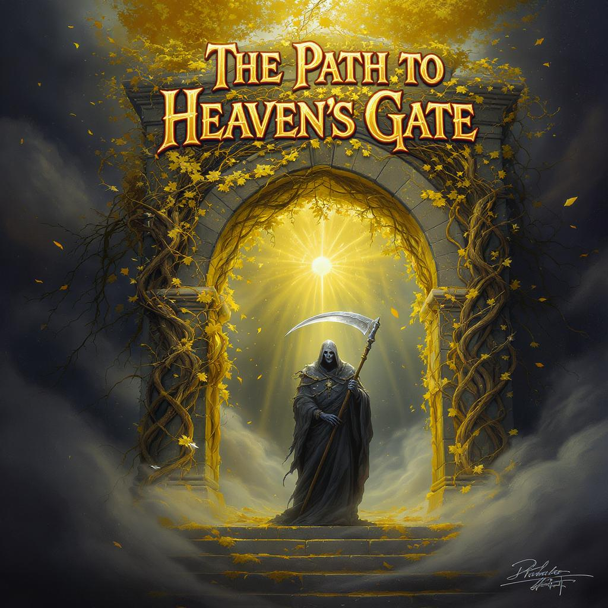

The Path to Heaven's Gate
Player wakes up in an unknown place with no idea how they got there and no memory. Greeted by the Gatekeeper, the player learns they are in The Void, the space between Heaven, Hell and the Living.

Concept
Player wakes up in an unknown place, and has no idea how they got there, no memory. Greeted by the Gatekeeper, who explains who the player is and how they died. Player is now in The Void, the space between Heaven, Hell and the Living. In order to get to Heaven, the player needs to prove they’re worthy. Do this by playing the game and defeating the Gatekeeper. The player can approach the Gatekeeper at any time to be tested. You can gain gear and abilities by progressing through the main storyline, doing side quests and buying gear from NPC shops. You can upgrade skills/abilities by spending points you get through leveling up.
Main objective is to gain gear through killing beasts/animals, running dungeons and finishing quests. Getting tested by the Gatekeeper to see if the player is worthy enough to move on. Gatekeeper is the final boss and is this huge battle the player must take on.
Target Audience & Platform
The target audience will be ages 13+ and may contain mature content. The target player will be someone who is familiar with video games, but they don’t need to be an expert in order to play. There will be lots of replayability and runs with the large variety of weapons, and the freedom to explore most of the world. This allows for gamers of all skills and levels to play, along with the different difficulty levels.
Windows 10 and Windows 11 only. Will be available to purchase through Steam, and potentially a website.
Back to game development